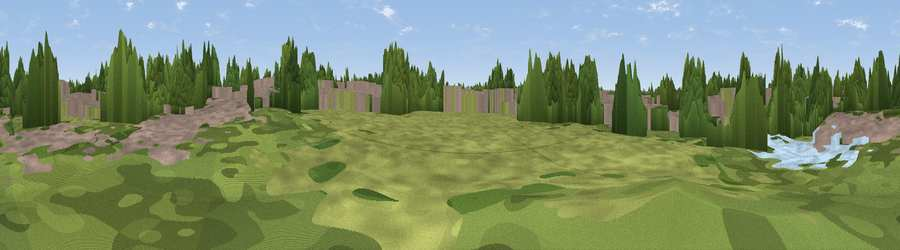

Bilston Castle Mound
#45187 in England · top 94% of its area beats it · near BilstonThe view, rendered

A 360° render of this exact spot computed from the terrain model, tree cover and land cover — summer colours, afternoon light, calibrated against photographs of famous viewpoints. Real trees, hedges and buildings will differ in detail.
The panorama
Grey silhouette: terrain skyline in each direction (720 bearings, Earth curvature and refraction included). Dashed green: skyline with trees (+15 m) and buildings (+8 m) as obstacles. Blue strip: how far the ground is visible on each bearing.
Where the view opens
Wedge length = distance to the farthest visible ground on that bearing (vegetation-aware). Rings at 10, 25 and 50 km.
What fills the view
37% built-up · 36% woodland · 24% grassland · 3% water
Angular shares of the visible panorama (visual magnitude), not map area. Landscape diversity 0.52 (0–1 Shannon).
Key numbers
More beautiful places nearby
The staircase of upgrades: each row has a higher view potential than everything closer. Driving times are estimates from straight-line distance, calibrated against real road routing — check an actual route before setting out.
| Place | Direction | Drive | Score |
|---|---|---|---|
| Viewpoint near Ettingshall Park | SW · 4 km | ~9 min | 59.3 |
| Viewpoint near Gospel End | SSW · 6 km | ~13 min | 62.3 |
| Viewpoint near Oakham | S · 9 km | ~17 min | 68.3 |
| Viewpoint near Oakham | S · 9 km | ~18 min | 68.8 |
| Viewpoint near Streetly | E · 11 km | ~21 min | 69.5 |
| Viewpoint near Clent | S · 17 km | ~30 min | 73.8 |
| Viewpoint near Clent | S · 18 km | ~30 min | 74.3 |
| Knowle Hill | WSW · 30 km | ~47 min | 75.5 |
52.57777, -2.07540 · source: osm viewpoint · position refined by local search. Computed location — check access rights before visiting.